Je suis vidéaste professionnel basé en France. Je propose des vidéos dans le domaine du tourisme, du sport, de l'hôtellerie et de l'évènementiel, en format horizontal ou vertical pour votre site web ou vos réseaux sociaux.
Capturer des moments de vie, des souvenirs, raconter des histoires font partie de mon quotidien depuis tout petit. Ce qui m'a fait tomber amoureux de l'art de la vidéo, c'est le plaisir de transmettre des émotions .
Je suis par ailleurs convaincu que c'est la clé d'une vidéo réussie, peu importe son sujet : le spectateur doit se sentir touché pour être impliqué et impacté. Faire naître des émotions et toucher les gens est donc au cœur de chacune de mes réalisations.
Mon parcours m'a permis de travailler avec des marques que j'apprécie comme Hermès, Club Med, ou encore Couleur pour la Coupe du Monde de Rugby , et j'en suis très fier !
Je serais râvi de continuer sur cette lancée avec vous ! :)

 

killian.jaffrelot@gmail.com
+33 6 51 73 80 41
N'hésitez pas ! :)